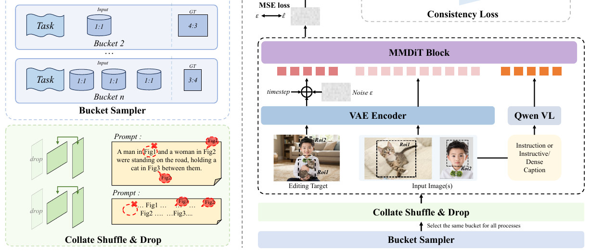
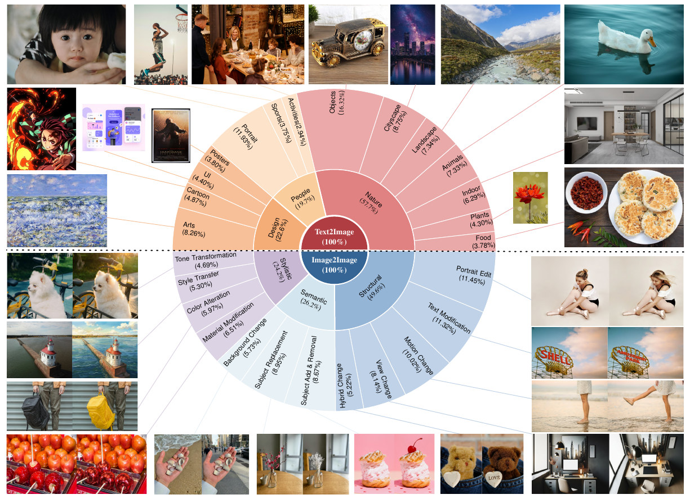
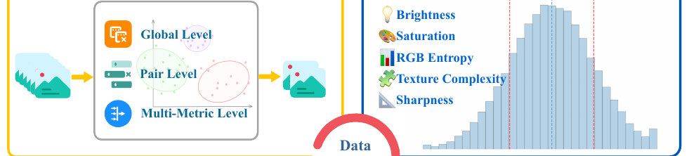
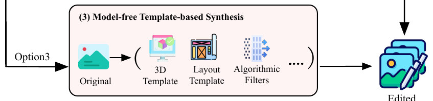
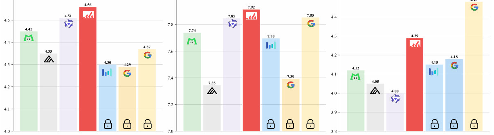

速览
版本说明：arXiv v1 发布于 2026-02-12（本页主日期）；本页逐字核对的是 arXiv v2（页眉标注 2026-06-14）。v1 与 v2 的差异未逐条比对。
五句话看懂
数据漏斗：1.6B → 100M+
900M T2I + 700M 编辑对§2，经三级去重、统计/内容/美学/AIGC 预过滤、合成补数、VLM 后过滤，留下 100M+，生成与编辑约 1:1§2.1。
caption 分三级，并随阶段换配比
编辑指令有详细 / 精简 / 口语三种写法§2.5.2；指令型 caption 占比从预训练 5% 升到 DPO/NFT 的 60%表 1。
质检模型是 100K 标注训出的 Qwen3-VL-8B
50K 正例 + 50K 改写指令的负例，人工双盲标「指令对齐」「感知质量」，SFT 后用于筛超过一亿条原始样本§2.6。
后训练：PSR-DPO + DiffusionNFT
DPO 中放大 Win Diff 权重（ω>1）并加 SFT 项，缓解「双降」式 2；NFT 用 CoT 软分数 VLM 奖励 + 版面感知 OCR 奖励，并只挑 semi-hard 样本§3.6.2。
成绩强，但没有消融
ImgEdit 4.56、GEdit-EN 7.943 均列表内第一表 3/4；REDEdit-CN 落后 Nano-Banana-Pro 0.15推算。全文没有任何消融实验，各组件贡献无法核对。
架构：沿用开源 T2I 基座，改动集中在训练侧
原文没有给层数、宽度或参数量。架构上能确认的只有下面几点；大部分新东西在采样器、数据整理和损失上。

基座 §3.1
基于开源多模态 T2I 基础模型 [38]（参考文献为 Qwen-Image），双流 MM-DiT 作为生成主干。文本嵌入、VAE latent、编辑场景下的参考图特征拼成一条序列。
3D Unified RoPE §3.1
参考图与目标图 token 共享空间坐标，用一个时间间隔区分；干净参考图与带噪目标 latent 使用不同的时间条件。
条件编码 图 7
Qwen VL 同时吃指令（或 instructive / dense caption）和输入图；VLM 嵌入离线预计算存盘，训练时不再在线编码§3.2。
训练侧附加 §3.2 §3.7
Multi-Condition Aware Bucket Sampler、Stochastic Instruction Alignment、人脸 RoI 一致性损失（只在 σ<0.9 时生效）。推理侧原文未给步数、CFG 等设置。
训练效率细节（分桶 / 指令对齐 / 系统层）§3.2
- Multi-Condition Aware Bucket Sampler：桶 Br,n 同时由目标宽高比 r 和输入图数 n 决定；每卡视觉序列长度约束到常数容量 C；桶尺寸按最小化总裁切面积选取式 1。
- Stochastic Instruction Alignment：collate 时对参考图随机丢弃 + 随机重排，并把提示词里的「Fig 1 / Fig 2」重新编号，使文字指代与新顺序一致。丢弃概率原文未给。
- 系统层：VLM 特征离线缓存；FSDP → 显存够后改为节点内分片的 HSDP；梯度检查点；BF16 混合精度。吞吐提升幅度原文未给数字。
数据：漏斗、合成引擎、三级 caption、VLM 质检
全文最厚的一章（§2，约 7 页）。顺序是：收集 → 预过滤 → 合成补数 → 长尾补充 → caption → 后过滤。
分布：原文给了比例，可以画
Structural 包括视角、动作、人像、文字修改、混合变化；Semantic 为增删替换与换背景；Stylistic 为调色、风格迁移、色调、材质。T2I 与 I2I 两大块之间约 1:1图 3。

预过滤：五类过滤器
各级阈值、每级过滤掉的比例：原文未披露。

合成：数据生产引擎（三条正向构造 + 两个增强）
① 指令控制的专家模型 §2.3
默认专家为只需「图 + 指令」的编辑模型 [16, 32, 39, 51]。维护两个库：专家指令库（把每个专家的能力边界写成确定性模板与槽位）和编辑目标词表（VLM 发现可编辑目标 + 任务清单 + OCR、坐标等辅助元数据）。专家还会用 SFT / LoRA 再精调。
② 结构控制的专家模型 §2.3
用 SAM 3 [3] 取 mask、DWPose [46] 取关键点，结合预设配置模板生成结构化控制信号，驱动 ControlNet 类专家 [51 等]。适合精确移除、表情 / 姿态迁移、外观重定向。
③ 免模型模板合成 §2.3
3D 参数化模板（图形引擎 + 骨骼绑定，生成像素一致的表情 / 姿态）、版式模板（文字、logo、UI 锚点）、算法滤镜模板（锐化、调色等低层操作）。
增强：Task Inversion / Task Splitting §2.3
反转：可逆编辑交换 src/tgt，减少指令方向偏置。拆分：多操作编辑拆成原子步骤逐步执行，减少质量退化。

长尾补充：check and fill §2.4
所有训练指令入向量库。模型在某个编辑域表现差时，先查该类指令的样本密度；不够就判为「数据缺口」，再用以图搜图 / 以文搜图从大候选池找底图，送入数据引擎生成新对。密度阈值、补了多少：原文未披露。
Caption 引擎：结构化 caption + 三级编辑指令
详细指令 caption
- 专门微调的 VLM（引 Qwen3-VL [33]）做 src→tgt 差异推理
- 重点：左右方位、视角变化、细粒度属性
- 作为编辑描述的「基准真值」
精简改写
- 从多种 VLM 中随机选一个（引 GLM [8]、Kimi K2 [31]）+ 词表
- 随机句式：倒装、无主语祈使、口语等
- 去掉冗余修饰，抽象具体概念
口语化改写
- 注入人设语气与求助语（如 “Can you help me fix this?”）
- 按不同比例混入
- 与详细描述混训，形成从口语到细粒度的多尺度指令分布
结构化 caption（主体、背景、光照、风格、机位）用于 T2I 训练与 I2I 对的视觉锚定§2.5.1。正文引用了「Annotation Prompt 7」，但 v2 全文中找不到这个 prompt。
后过滤：自训 VLM 质检模型
训练数据 §2.6
- 正例
- 50,000 条「源图–指令–目标图」三元组
- 负例
- 50,000 条：LLM 对原指令做语义扰动 / 随机改写
- 总量
- 100,000 条，人工专家双盲标注
- 标注维度
- 指令对齐、感知质量（清晰度、伪影、美感）
模型与用法 §2.6
- 骨干
- Qwen3-VL-8B，SFT
- 作用对象
- >100M 原始样本（真实对 + 合成对）
- 规则
- 对齐分 + 质量分联合阈值
- 与人评相关性
- 原文称“strong correlation”，无具体数字
同一套奖励模型在 NFT 阶段复用为 VLM 奖励§3.6.2。
已披露规模表（训练各阶段）
| 项 | Pretrain | CT | SFT | DPO | NFT |
|---|---|---|---|---|---|
| 互联网收集 | 100M | 5M | 50K | 10K | 10K |
| 合成数据 | 5M | 10M | 50K | 50K | 10K |
| Original Cap. | 55% | 20% | 10% | 10% | 10% |
| Structured Cap. | 40% | 60% | 45% | 30% | 30% |
| Instructive Cap. | 5% | 20% | 45% | 60% | 60% |
来源：表 1。未披露：各阶段 T2I / 编辑的具体比例、15 个编辑子任务在各阶段的配比、开源集 / 引擎 / 视频 / 互联网四种来源各占多少、各过滤环节淘汰率。
训练配方：五段式
表 1 给了数据量、分辨率、步数、warm-up 与共享优化器设置；学习率、batch size、GPU 数均未给。
Pretrain
- 数据
- 100M + 5M
- 分辨率
- 384–512
- 步数
- 300K
- warm-up
- 0
Continued PT
- 数据
- 5M + 10M
- 分辨率
- 512–1024
- 步数
- 65K
- warm-up
- 0
SFT
- 数据
- 50K + 50K
- 分辨率
- 1024
- 步数
- 5K
- warm-up
- 500
DPORL
- 数据
- 10K + 50K
- 分辨率
- 1024
- 步数
- 5K
- warm-up
- 500
DiffusionNFTRL
- 数据
- 10K + 10K
- 分辨率
- 1024
- 步数
- 500
- warm-up
- 0
数据 = 互联网 + 合成表 1。共享：AdamW（β₁=0.9，β₂=0.999）、梯度裁剪 1、weight decay 0.01表 1。
caption 类型配比随阶段迁移 表 1
Pretrain §3.3
- 动态分桶，原生任意分辨率 / 宽高比；可在 T2I 与单图输入间切换
- 「包容式」过滤：不做严格美学筛选和类别平衡，保留长尾概念
- 原始元数据 + 结构化合成 caption 混训
- timestep 课程：先偏高噪声，逐步过渡到均匀采样
Continued PT §3.4
- T2I / 单图 / 多图统一采样
- 宽高比覆盖 2:1、16:9、3:2、4:3、1:1、3:4、2:3、9:16、1:2
- 加入稠密 caption，学长尾词汇
- 按语义聚类均匀采样做类别平衡
SFT §3.5
- 以 1024×1024 为主、经人工精细过滤的数据
- 指令型 caption + 结构化 prompt
- 按类别动态重采样，防长尾遗忘
- 学习率「显著小于」预训练（数值未给）+ EMA
全程训练策略 §3.8
- 分布式分层 timestep 采样：时间轴切成 K 段（K = world size），各 rank 各取一段，定期广播种子轮换
- Logit-Normal 损失加权，侧重中间时间步
- EMA 权重平均
后训练三件事
DPO + PSR §3.6.1 式 2
观察到 Win Diff 与 Lose Diff 同步上升（「双降」）。做法：在 Win Diff 前乘 ω>1，再减去 λ·SFT 项，让优化以正样本重建为主。
数据：VLM 多阶段指令演化合成指令；Mix-Policy——正例来自多个专家分支与美学优化模型，负例来自基座模型并经 VLM 过滤。ω、λ、β 取值原文未给。
DiffusionNFT §3.6.2 式 3–5
VLM 奖励：先生成 CoT，再取评分 token（如 1–5）的 softmax 概率求期望，K 次随机推理取平均，得到连续奖励。
版面感知 OCR 奖励：编辑距离项 + 门控后的逐字符位置 / 尺度项，惩罚靠「把字写大」骗 OCR 的 reward hacking。
Semi-hard 挖掘：用 DPO checkpoint 离线采多个候选，挑「均值够高但下界不稳」的样本。
Consistency Loss §3.7 式 6–8
用 x̂₀ = x_t − σ_t·v_t 的一步估计，按 GT 人脸关键点做同一对齐变换，过人脸识别骨干算余弦距离；多人时逐脸平均。
权重 λ_id(σ) = η·σ²（σ<0.9），否则为 0。η 取值原文未给。
原文没给的超参 未披露
学习率、batch size、GPU 规模与训练时长、EMA 衰减、Stochastic Instruction Alignment 丢弃概率、NFT 的 β 与 K、OCR 奖励权重 w_text / w_layout、后过滤阈值。
评测：两个公开基准 + 自建 REDEdit-Bench + 人评
原表用粗体 / 下划线标最佳 / 次佳，纯文本里丢失了；本页用 ● 标出按数值重新判定的列最佳。表中无 * / † 等记号。
主表：9 个在各表中都出现的模型
| 模型 | ImgEdit Overall | GEdit-EN G_O | GEdit-CN G_O | REDEdit-CN Overall | REDEdit-EN Overall | REDEdit 文字 SuccessEdit |
|---|---|---|---|---|---|---|
| 闭源 | ||||||
| Nano-Banana | 4.29 | 7.291 | 7.399 | 4.13 | 4.15 | 7.93 |
| Seedream4.0 | 4.30 | 7.701 | 7.692 | 4.15 | 4.18 | 8.59 |
| Seedream4.5 | 4.32 | 7.820 | 7.800 | 4.18 | 4.20 | 8.61 |
| Nano-Banana-Pro | 4.37 | 7.738 | 7.799 | 4.48 | 4.42 | 9.54 |
| 开源 | ||||||
| FLUX.2 [Dev] | 4.35 | 7.413 | 7.278 | 4.05 | 4.07 | 7.93 |
| Qwen-Image-Edit-2509 | 4.31 | 7.480 | 7.467 | 4.00 | 3.99 | 8.35 |
| LongCat-Image-Edit | 4.45 | 7.748 | 7.731 | 4.12 | 4.12 | 8.60 |
| Qwen-Image-Edit-2511 | 4.51 | 7.877 | 7.819 | 4.18 | 4.23 | 9.42 |
| FireRed-Image-Edit | 4.56 | 7.943 | 7.887 | 4.33 | 4.26 | 9.57 |
← 左右滑动查看 →
来源：表 3（ImgEdit）、表 4（GEdit）、表 5/6（REDEdit-CN/EN）、表 7（文字）。REDEdit 由 Gemini 3 Flash 自动评分§4.2；ImgEdit / GEdit 的评分模型原文未说明。分数口径：ImgEdit 与 REDEdit 为 1–5 分制，GEdit 与文字 VLM Judge 为 10 分制（按表中数值范围判断）。
强项 可核对
- ImgEdit Extract 4.34，列内最高；Qwen-Image-Edit-2511 为 4.13表 3
- GEdit-EN 语义一致性 G_SC 8.363 最高表 4
- 文字编辑 SuccessEdit 9.57 为表内最高，OCR 0.983 仅比 Nano-Banana-Pro 低 0.001表 7
弱项 同样来自原表
- GEdit 感知质量 G_PQ：EN 8.245 / CN 8.227，低于 Nano-Banana 的 8.454 / 8.424表 4
- REDEdit Viewpoint：CN 3.14、EN 2.78，EN 为 9 个模型中最低表 5/6
- 新引入的 Beauty（美颜）：CN 3.69 / EN 3.55，Nano-Banana 为 4.37 / 4.37表 5/6
- ImgEdit Action 4.71，低于 Nano-Banana 4.83表 3
REDEdit-Bench 是什么
构建 §4.1
从互联网与合法采购渠道收集 3,000+ 张真实图片（风景、建筑、物体、动物、人像），技术人员选图并写指令，最终 1,673 对中英双语编辑样本，多专家复核。15 类，含新加的 Beauty（美颜）与 Low-level（画质增强）。
评分 §4.2
通用维度：Prompt Compliance、Visual Naturalness、Physical & Detail Coherence，Gemini 3 Flash 评分。文字子集另加 OCR（Levenshtein、完成率、词准确率加权归一）与 VLM Judge（SuccessEdit、OverEdit、Style、Consistency）。
| 基准 | 规模 | 真实图 | 人工筛选 | 子任务 | 双语 | 任务专属评测 prompt |
|---|---|---|---|---|---|---|
| MagicBrush | 1,053 | ✔ | ✔ | 7 | ✘ | ✘ |
| AnyEdit | 1,250 | ✔ | ✘ | 25 | ✘ | ✘ |
| ImgEdit | 811 | ✔ | ✔ | 14 | ✘ | ✔ |
| GEdit-Bench | 606 | ✔ | ✔ | 11 | ✔ | ✘ |
| REDEdit-Bench | 1,673 | ✔ | ✔ | 15 | ✔ | ✔ |
来源：表 2（照录原表）。
人评
多模型盲评 §5.1 图 10
同一输入的多个模型输出随机顺序同时展示，隐藏模型名；维度为 Prompt Following 与 Consistency Preservation。对手：LongCat、Nano-Banana-Pro、Qwen-Image-Edit-2511、Seedream4.5。
图 10 每个维度给 4 组两两比例：Prompt Following 为 65.7 / 57.4 / 55.3 / 44.3%（FireRed 一侧，按图读），Consistency 为 56.1 / 61.1 / 55.0 / 51.2%。图注称 FireRed 一致性最高，Prompt Following 被 Nano-Pro 略超。样本数、标注人数、一致性系数原文未披露；哪一组对应哪个对手，正文没写明。

ImgEdit 分类别（节选）表 3
| 模型 | Add | Adjust | Extract | Replace | Remove | BG | Style | Hybrid | Action | Overall |
|---|---|---|---|---|---|---|---|---|---|---|
| Nano-Banana | 4.62 | 4.41 | 3.68 | 4.34 | 4.39 | 4.40 | 4.18 | 3.72 | 4.83 | 4.29 |
| Nano-Banana-Pro | 4.44 | 4.62 | 3.42 | 4.60 | 4.63 | 4.32 | 4.97 | 3.64 | 4.69 | 4.37 |
| Emu3.5 | 4.61 | 4.32 | 3.96 | 4.84 | 4.58 | 4.35 | 4.79 | 3.69 | 4.57 | 4.41 |
| ChronoEdit | 4.48 | 4.39 | 3.49 | 4.66 | 4.67 | 4.57 | 4.91 | 3.82 | 4.83 | 4.42 |
| LongCat-Image-Edit | 4.44 | 4.53 | 3.83 | 4.80 | 4.60 | 4.33 | 4.92 | 3.75 | 4.82 | 4.45 |
| Qwen-Image-Edit-2511 | 4.54 | 4.57 | 4.13 | 4.70 | 4.46 | 4.36 | 4.89 | 4.16 | 4.81 | 4.51 |
| FireRed-Image-Edit | 4.55 | 4.66 | 4.34 | 4.75 | 4.58 | 4.45 | 4.97 | 4.07 | 4.71 | 4.56 |
● 为原表 23 个模型中的列最佳（按数值重新判定；Style 两家并列 4.97）。
REDEdit-Bench 分类别（CN / EN）表 5、表 6
| 模型 | Overall | Add | Adjust | BG | Beauty | Color | Compose | Extract | Portrait | Low-level | Motion | Remove | Replace | Stylize | Text | Viewpoint |
|---|---|---|---|---|---|---|---|---|---|---|---|---|---|---|---|---|
| REDEdit-Bench-CN | ||||||||||||||||
| Nano-Banana-Pro | 4.48 | 4.66 | 4.41 | 4.58 | 4.35 | 4.58 | 4.36 | 3.42 | 4.86 | 4.46 | 4.91 | 4.54 | 4.79 | 4.85 | 4.69 | 3.75 |
| Qwen-Image-Edit-2511 | 4.18 | 4.50 | 4.23 | 4.52 | 3.61 | 4.09 | 4.00 | 3.22 | 4.31 | 4.19 | 4.66 | 4.41 | 4.68 | 4.83 | 4.08 | 3.51 |
| FireRed-Image-Edit | 4.33 | 4.57 | 4.37 | 4.64 | 3.69 | 4.45 | 4.29 | 3.49 | 4.50 | 4.56 | 4.65 | 4.47 | 4.81 | 4.93 | 4.49 | 3.14 |
| REDEdit-Bench-EN | ||||||||||||||||
| Nano-Banana-Pro | 4.42 | 4.72 | 4.40 | 4.64 | 4.37 | 4.43 | 4.32 | 3.25 | 4.82 | 4.36 | 4.85 | 4.52 | 4.75 | 4.90 | 4.54 | 3.51 |
| Qwen-Image-Edit-2511 | 4.23 | 4.55 | 4.17 | 4.56 | 3.49 | 4.07 | 4.07 | 3.54 | 4.42 | 4.52 | 4.72 | 4.42 | 4.65 | 4.85 | 4.06 | 3.38 |
| FireRed-Image-Edit | 4.26 | 4.41 | 4.33 | 4.60 | 3.55 | 4.47 | 4.25 | 3.49 | 4.50 | 4.44 | 4.65 | 4.46 | 4.70 | 4.94 | 4.44 | 2.78 |
节选 3 个模型；● 表示该值等于原表全部 9 个模型中的列最高（可能并列）。未展示模型持有的列最高：CN Beauty — Nano-Banana 4.37；CN Stylize — FLUX.2 [Dev] 4.95；CN Viewpoint — FLUX.2 [Dev] 3.88；EN Stylize — Seedream4.0 4.98；EN Viewpoint — FLUX.2 [Dev] 3.84。
文字编辑完整表表 7
| 模型 | OCR | SuccessEdit | OverEdit | Style | Consistency |
|---|---|---|---|---|---|
| Nano-Banana | 0.958 | 7.93 | 9.53 | 9.30 | 8.04 |
| Seedream4 | 0.969 | 8.59 | 9.26 | 9.19 | 9.15 |
| Seedream4.5 | 0.975 | 8.61 | 9.37 | 9.00 | 8.93 |
| Nano-Banana-Pro | 0.984 | 9.54 | 9.63 | 9.68 | 9.53 |
| FLUX.2 [Dev] | 0.950 | 7.93 | 8.90 | 8.83 | 8.33 |
| Qwen-Image-Edit-2509 | 0.957 | 8.35 | 9.26 | 9.15 | 8.15 |
| Qwen-Image-Edit-2511 | 0.969 | 9.42 | 9.36 | 9.31 | 9.27 |
| LongCat-Image-Edit | 0.976 | 8.60 | 8.96 | 8.67 | 8.50 |
| FireRed-Image-Edit | 0.983 | 9.57 | 9.53 | 9.49 | 9.51 |
OCR 一列 9 个模型集中在 0.950–0.984，区分度有限；VLM Judge 各列拉得更开。
定性示例（论文图 2）展示图，非定量
新在哪：五条可核对的点
FSDP/HSDP、BF16、EMA、Logit-Normal 加权属于常规工程，不计入。
分桶时把「输入图张数」也作为桶的维度
桶 Br,n 由宽高比 r 和参考图数 n 共同决定，每卡视觉 token 总长约束为常数§3.2 式 1。
多图编辑与 T2I 混训时，单按分辨率分桶会让不同卡序列长度差很多。
打乱参考图顺序时同步重写指令里的「Fig N」
Collate 阶段对参考图随机丢弃、重排，并把文本中的图号重新编号§3.2。
让模型学会按语义而不是按位置对应参考图。
DPO 中的正样本强化（PSR）
针对 Win/Lose Diff 同步上升，放大 Win Diff（ω>1）并加 SFT 正则§3.6.1 式 2；配合 Mix-Policy（正例来自专家 / 美学模型，负例来自基座）。
只有现象描述，没有给出改动前后的曲线或分数。
版面感知 OCR 奖励
逐字符比对位置与尺度，门控后叠加到编辑距离奖励上，针对「放大字号骗 OCR」§3.6.2 式 5。
文字编辑 RL 的 reward hacking 是真实问题，这一项针对性强。
按噪声水平调度的人脸身份损失
在一步估计 x̂₀ 上算人脸识别余弦距离，权重 η·σ²、σ≥0.9 时关闭§3.7 式 6。
与之配套的还有 REDEdit-Bench 新加的 Beauty / Low-level 两类评测§6。
对图像编辑数据、评测与 caption 的启示
每条先写论文做法（带出处），再给一条可迁移做法。绿色框内都是迁移建议，不是论文内容。
D1编辑对级去重：看 src 与 tgt 像不像
论文：L2 用 CLIP + 内部 embedding 算源图与目标图相似度，去掉近似恒等映射；L3 再叠 PSNR / SSIM / ISC21 / CLIP 去掉「几乎没改」的样本§2.2.1。
迁移建议，不是论文内容：按编辑类型分别定 src–tgt 相似度的上下界（局部消除类本应很高，风格迁移类本应较低），每条被淘汰的样本记下原因码，方便回查误杀。
D2质检模型的负例：改指令，不改图
论文：50K 真实三元组做正例，LLM 对指令做语义扰动得到 50K 负例，人工双盲标对齐与质量，SFT Qwen3-VL-8B，再筛超过一亿条样本§2.6。
迁移建议，不是论文内容：指令扰动负例成本低，可按「方位反转 / 数量改变 / 对象替换」等扰动类型分桶，各类单独报召回；再留一份人工标的 held-out 集，公开所用阈值下的准确率——论文只写了“strong correlation”。
D3任务反转与拆分
论文：可逆编辑交换 src/tgt 以减少指令方向偏置；多操作编辑拆成原子步骤迭代生成§2.3。
迁移建议，不是论文内容：反转后的样本单独打标、单独控比例；「删除 → 反转为添加」时目标是真实原图，可优先保留。拆分出的中间步要过同一套质检，避免误差累积。
D4长尾缺口用检索补，而不是盲目扩量
论文：训练指令入向量库；评测发现某域弱时先查样本密度，不足即检索底图送引擎补数§2.4。
迁移建议，不是论文内容：把「评测失败类别 → 指令库密度 → 补数量 → 复评分数」做成一张固定看板，每轮补数前后对比，才知道补数有没有用。
D5AIGC 检测与合成数据并存
论文：预过滤用内部 AIGC 检测去掉生成图§2.2.5；同时 CT 阶段合成数据（10M）多于互联网数据（5M）表 1。
迁移建议，不是论文内容：AIGC 检测只对源图严格执行，目标图允许是专家模型输出；在数据卡里按阶段记录合成占比，与画质类指标一起看。
C1一条样本存三种指令
论文：微调 VLM 写详细差异描述（重点左右、视角）→ 随机 VLM 精简改写（倒装、无主语等句式）→ 口语化求助式改写；与详细描述混训§2.5.2 图 6。
迁移建议，不是论文内容：三种写法都落盘，训练时按步采样，而不是预先二选一；另建一个「左右 / 视角」专项小集，定期抽查 caption VLM 在这两项上的错误率。
C2caption 类型配比是阶段超参
论文：原始 / 结构化 / 指令型 caption 从 55/40/5%（预训练）调到 10/30/60%（DPO、NFT）表 1。
迁移建议，不是论文内容：把这组比例写进训练配置并随 checkpoint 记录；论文没做这组比例的消融，自己复现时值得先扫两三档。
C3多参考图指令里的图号要结构化
论文：参考图打乱 / 丢弃后同步重写提示里的「Fig N」§3.2。
迁移建议，不是论文内容：caption 中的图号存成占位槽（如 {ref_1}）而非纯文本，重排时才能安全替换；参考图被丢弃时如何改写对应句子，论文没说，需要自己定规则。
E1文字编辑：OCR + VLM Judge 双轨
论文：OCR 分（Levenshtein、完成率、词准确率加权）+ VLM Judge（SuccessEdit、OverEdit、Style、Consistency）§4.2 表 7。表 7 中 9 个模型 OCR 都在 0.950–0.984。
迁移建议，不是论文内容：OCR 只当准入门槛，排序靠 OverEdit / Style / Consistency；把训练用的版面感知 OCR 奖励（式 5）同时作为评测指标，能直接暴露「字变大」类 hacking。
E2VLM 打分取概率期望
论文：CoT 后取评分 token 的 softmax 期望，K 次推理取平均，作为连续奖励§3.6.2 式 4。
迁移建议，不是论文内容：同样的软分数也可用于数据过滤与自动评测：整数分大量并列时，连续分便于定阈值和看分布漂移。
E3自建基准要交代评分器
论文：REDEdit-Bench 1,673 对、15 类、中英双语、任务专属评测 prompt，Gemini 3 Flash 单一评分器§4 表 2。
迁移建议，不是论文内容：内部评测集固定评分模型版本与每类 prompt，并至少用第二个评分器复跑一次报告排序是否一致；新增类别（如美颜）先用小规模人评校准评分器。
E4人评只看两件事
论文：多模型同屏盲评，只评 Prompt Following 与 Consistency Preservation§5.1。
迁移建议，不是论文内容：两维足够做快速盲评，但要同时报样本数、标注人数、胜 / 平 / 负和一致性——这些论文都没给，结果就难以复核。
局限与存疑
- 没有任何消融。PSR-DPO、版面感知 OCR 奖励、Consistency Loss、多条件分桶、Stochastic Instruction Alignment、timestep 策略、caption 配比，全文都没有去掉某项后的对比，贡献无法拆分。
- 数据规模前后说法不一。摘要：收集 1.6B、保留 100M+摘要 §2；引言：约 1 亿§1；§3.1 与结论：约 10 亿图文对§3.1 §6；表 1 预训练为 100M 互联网 + 5M 合成。
- 表 4 疑似抄错行。Qwen-Image-Edit-2509 与 Step1X-Edit-v1.2 六列数值完全相同（7.974 / 7.714 / 7.480 / 7.988 / 7.679 / 7.467）表 4。
- 人评协议与图不符，且缺样本量。正文说“不是两两比较”，图 10 却是每组加起来 100% 的两方比例；样本数、标注人数、一致性都没有；正文称 Prompt Following 领先，图注又说 Nano-Pro 略胜§5.1 图 10。
- REDEdit-Bench 自建自评。作者团队构建，Gemini 3 Flash 单一评分器，正文未给评分 prompt；结论虽称会发布基准，但在发布前外部无法复现表 5–7。
- 图 3 子类加总低于父类。图 3 外圈子类百分比加总与内圈 100% 不完全对得上（读图），可能是四舍五入或细类标注未完全可读，正文未列表给出。各来源占比、15 个子任务在各阶段的配比也未披露。
- 质检模型没有量化指标。Qwen3-VL-8B 评估器只说与人评“strong correlation”，没给相关系数或准确率；过滤阈值和淘汰率也没给§2.6。
- 关键超参缺失。学习率、batch size、算力规模、ω / λ / β / η / K、EMA 衰减都没给；参数量与许可证原文未写。
- 文中前后不一致的小处。「Annotation Prompt 7」被引用但正文找不到§2.5.1；EMA 被同时描述为指数滑动平均和「参数的算术平均」§3.8；结论列出的「Multi-Image DPO」正文没有对应小节§6。
- 新增类别反而是弱项。REDEdit Viewpoint EN 2.78 为 9 个模型中最低；新加的 Beauty 为 3.69 / 3.55，低于 Nano-Banana 系列的 4.35–4.37表 5/6。
图表索引
| 编号 | 内容 | 本页位置 |
|---|---|---|
| 图 1 | 首页三基准对比柱状图（文件 fig0-teaser.jpg，已裁去上缘与图例） | 评测 |
| 图 2 | 通用编辑效果展示 | 评测 · 折叠 |
| 图 3 | T2I / I2I 数据分布旭日图 | 数据 |
| 图 4 | 数据过滤总览（局部：去重 + 统计过滤） | 数据 |
| 图 5 | 数据生产引擎（局部：免模型模板合成） | 数据 |
| 图 7 | 架构总览：分桶、Shuffle & Drop、MMDiT、一致性损失 | 架构 |
| 表 1 | 各阶段数据量、caption 配比、分辨率、步数、优化器 | 数据 · 训练 |
| 表 2 | 开源编辑基准属性对比 | 评测 |
| 表 3 | ImgEdit 分类别结果 | 评测 |
| 表 4 | GEdit-EN / CN 结果 | 评测 |
| 表 5 / 6 | REDEdit-Bench CN / EN 分类别结果 | 评测 · 折叠 |
| 表 7 | REDEdit 文字编辑：OCR + VLM Judge | 评测 · 折叠 |
| 示意 | 3D Unified RoPE 坐标（本页自绘，非原图） | 架构 |
| 柱状图 | ImgEdit / GEdit-EN / REDEdit-CN 总分（本页据表 3–5 绘制） | 评测 |
论文图 6（指令 caption 示例）、图 8（训练流程）、图 9（REDEdit 类别分布）、图 10（人评）、图 11–17（定性对比）未提供裁图，本页以文字转述。